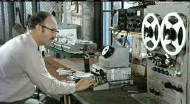

| Conversation, The (SE)/A,B+ |
| Paramount/1974/113/ANA 1.85 |
Every time you revisit a favorite movie you can't help wondering will it stand up to your high regard. The Conversation never ceases to fascinate. Multiple screenings are like catching a southwest sunshine, forever beautiful, forever different. Harry Caul, the hub around which every sound bounces off one of my favorite screen creations. He is so focused on his job, regardless of consequences, but even Harry gets sucked into humanity. I love all the technology dominating each scene, but in the end, it still comes down to manual labor when Harry tries to discover the bug. Writer/Director Francis Ford Coppola's The Conversation is one of the great screen character studies.
 |
| Harry works the tapes. ©Paramount |
Harry Caul is a sound surveillance specialist on assignment to snatch
an errant phrase or two from a man and a woman meandering through a San Francisco street scene.
Parabolic recording devices aimed from a distance or man carrying a recorder in a shopping bag send
the sounds back to a service truck parked in the street with everything is meticulously recorded.
Back at his sound lab located in an anonymous warehouse, Harry plays with the various tapes to
extract phrases hidden behind the action and banter of the streets.
On one hand a murder mystery in the classic sense, The Conversation
is primarily a fascinating character study. The directing challenge is to find the balance between
mystery and man, and Coppola has done a marvelous job. The question of involvement and
responsibility is an interesting quandary. Harry Caul wants to disappear into the maze of
electronic wires that rule his existence. Even in his personal life, Harry must remain uninvolved.
But this recording of The Conversation proves too seductive for Harry to ignore.
Gene Hackman is often such a flamboyant screen actor. As Popeye
Doyle in The French Connection Hackman bulled his way through the streets as a tough
cop, in Superman he leered and laughed all the way to the bank as arch villain Lex Luther
and as a Southern FBI man in Mississippi Burning he played cagey with a smile that belied a
tough core. Harry Caul in The Conversation is the actor's greatest achievement. All
the charm and energy is wound tight and tucked away int he pit of his stomach. He's a man bound by
total control over himself and his environment, slowly losing his armor of anonymity. Director and
Actor are in perfect synch. Coppola gives his supporting actors the space to disappear into their
roles as well. Harrison Ford is surprisingly fey as the tops man's assistant Martin Stett, John
Cazale as Caul assistant Stan punctuates his performance with typical sharp stabs of honesty. But
all the performances serve the central portrayal of Harry Caul.
The layered editing is brilliant. Building the film on a foundation of artful
repetition, Coppola and Editor Murch time up to deliver perfect pacing. Cinematographer Bill
Butler's shooting style is very naturalistic, simply an observer of the world of Harry Caul. David
Shire's minimalist piano score is haunting. It's simplicity is an echo of the sounds captured by
Caul's recording equipment.
The transfer is very good. The opening scene with the long slow zoom into
San Francisco center is very grainy, but that is a function of the very long lens. The grain is
stable and consistent. And that's the heft of the grain. There are some minor flecks of dirt on the
transfer element here and there. Overall, the pale, cold world or Harry Caul is captured accurately
in all lighting circumstances. Harry Caul is revealed bit by bit out of the shadows of his private
world. The transfer is sharp enough to look through the lens of Caul's glasses and peer into his
eyes. Color is stable and the explosion of blood is richly solid with no noise. The sound is
precise, detailed, subtly directional, and slowly revealing.
The feature made at the time the film was produced is entertaining
and revealing. Coppola is a natural leader on the set. I liked seeing his interaction with Hackman.
It's all intelligence. The feature is only about ten minutes, but it is illuminating. There are two
audio commentaries to be treasured on The Conversation. Editor Walter Murch is so meticulous
in his observations, ever the editor carefully selecting his images. Coppola is warmer, more
expansive in his views. Coppola talks about Hackman's intelligence in the audio commentary as well.
It's nice to learn how Harry Call became Harry Caul.. Between Coppola and Murch, listening to the
commentary on The Conversation will be an education in movie making.

Selections from the Feature Archive
include articles on Akira Kurosawa, Frank
Darabont, Blonde Bimbos, Hollywood Street Gangs, or Vietnam: The
Hollywood Pariah, and many more....

Click on the image above for an original view of Akira Kurosawa's work


The home of Francis Ford Coppola's Zoetrope
Studios has more corridors of interest than you might expect.

Information on film sound in theaters and home theaters. Lots of helpful information provided in a
handsome interface.

Great site for DVD followers. Lots of
information, some speculation, opinion, and reviews all bundled in a sparkling interface.

Home Vision Cinema
Classic and foreign motion pictures on VHS tape. The title
selection is excellent and informative essays are provided for many of the films.

Home to The American Society of Cinematographers. Includes features from
American Cinematographer Magazine and more..
 Brad Lang continues to add more interesting material to the extensive
collection at Classic
Movies. Everything from actors and actress to your favorite directors is
linked at the site.
Brad Lang continues to add more interesting material to the extensive
collection at Classic
Movies. Everything from actors and actress to your favorite directors is
linked at the site.
 Direct from the corridors of the Home Theater Forum, Home
Theater Talk is the newest place on the Net to discuss everything home theater. Friendly atmosphere
and knowledgeable folks are the secret ingredients.
Direct from the corridors of the Home Theater Forum, Home
Theater Talk is the newest place on the Net to discuss everything home theater. Friendly atmosphere
and knowledgeable folks are the secret ingredients.

The Movie Poster Archive includes extensive poster images from the films of stars like Susan Hayward, Kirk Douglas, Katharine Hepburn and many more. Our featured star is James Stewart